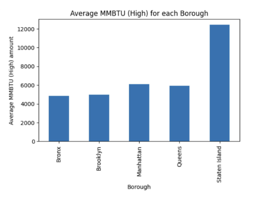
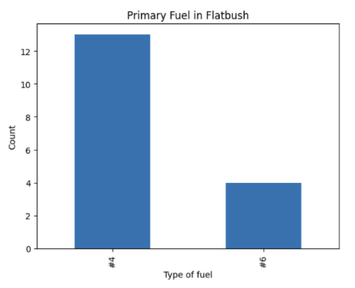

Flatbush contains the zip Codes: 11226, 11210, 11230
Flatbush does not contain the entirety of these zip codes but parts of them. Flatbush has about 104,530 people.
Information based on each zip code:
11226:
--99,776 people
--The population is 54.33% female and 45.67% male
--Median age of 35.4 years; 19.28% is 30-39 and 16.47% is 20-29
--63.94% is Black, 13.67% is White, 14.81% is Hispanic, and the rest is split between AIAN, Asian, Two+, and other
11210:
--65,854 people
--51.45% of the population is female and 48.55% of the population is male
--Median age of 37.7 years. The ages are pretty evenly distributed with about 11.46% to 13.87% in each category of under 9 years, 10-19, 20-29, and all the way up to 60 to 69. 7.16% are 70-79 and 3.75% are 80 and over
--51.82% is Black, 31.38% is White, and the rest is split among Asian, Two+, Hispanic, other
11230:
--91,789 people
--50.16% of the population are female and 49.84% are male
--Median age being 35.2 years. The distribution in ages is pretty evenly split up between under 9 years to 60-69, with each having between 10.69%-16.12%, and 6.78% are 70-79 and 4.06% are 80+
--62.38% is White, 15.22% is Asian, 10.93% is Hispanic, and the rest is split between Black, NHPI, Two+, and other.
New York has been making efforts to switch to clean energy for decades, to try to combat the pollution and greenhouse gas emissions they have. The NYC Clean Heat Program is a push by the New York City government for its citizens to switch to using heat pumps. Heat pumps are a lot better for the environment as they run on electricity instead of fossil fuels. In order to cool, heat pumps extract heat from inside and push it outside. In order to heat, they extract heat from outside. Some heavy fuels that New York City is trying to stay away from are No.4 and No.6 Fuels. No.4 Fuel is a commerical heating oil that doesn't need pre-heating. No.6 fuel is a residential oil that is heavy and requires pre-heating. Both are very harmful to the environment. NYC is doing more to be more environmentaly friendly, such as creating the DEP Boiler Registration and Greener Greater Buildings plan.
New York City is the #1 contributer to greenhouse gas emisisons in the United States. 2/3 of these greenhouse emissions come from our buildings due to the use of fossil fuels for cooking, heating, etc. Brooklyn contributes to these emissions, not only from buildings but also environmental factors. When it comes to emissions from buildings, Brooklyn has the third highest emissions out of the five boroughs, with a CBE of 7.1, higher than the NYC average of 7. There are other factors also contributing to emissions in Brooklyn, such as food and transportation. Brooklyn remains the third and fourth highest in these categories as well, usually staying close to the NYC averages. Brooklyn does not have above-average greenhouse gas emissions though, with a matching CBE of 11 for Total per Capita Emissions in NYC. NYC is trying to combat this and introduce more environmentally friendly legislation, such as Local Law 97, which sets limits to gas emissions in larger buildings, which are usually high contributers.
Brooklyn's data on MMBTU seemed to match observations and research from easlier assignments. Brooklyn usually had the second or third lowest numbers when it comes to factors causing emissions, like MMBTU. MMBTU is the amount of energy in a fuel, usually natural gas. So the higher MMBTU, the more energy in the fuel. If there is a leak, this can go into the air and be harmful. Brooklyn did not have a high number compared to the rest of the boroughs, as seen by the first plot below. Flatbush uses both No.4 and No.6 Fuel, and although both are bad for the environment, No.4 is used at a higher proportion than No.6, which is slightly better as No.6 requires pre-heating. This data can be seen in the second plot below. The boilers in Flatbush are definitely a problem though. As seen by the pie chart below, most of the boilers are over fifteen years old, some being in the age range 36-40 years old. Boilers should be replaced every fifteen years, so having boilers over twenty years are a large concern as this increases the chance of leaks, contributing to emissions.
 